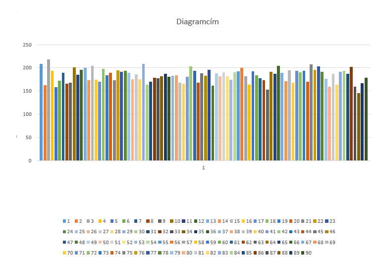
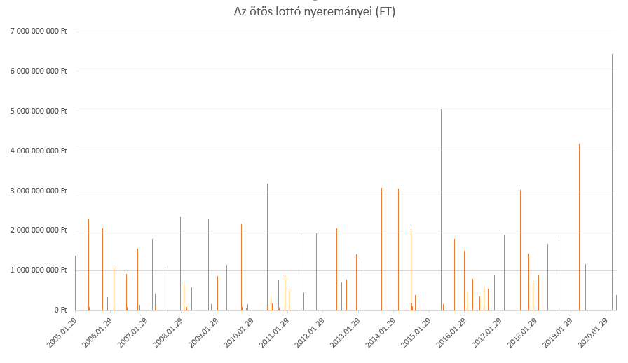

Korábbi sorsolások
Korábbi sorsolások
Leggyakoribb számok
Leghasonlóbb számsorok
Leghosszabb sorozatok számsorban
Legkisebb összegű számsorok
Grafikon
Érdekes történetek
Grafikonok
Számok megoszlása

Az ötös lottó nyereményei

Korábbi sorsolások